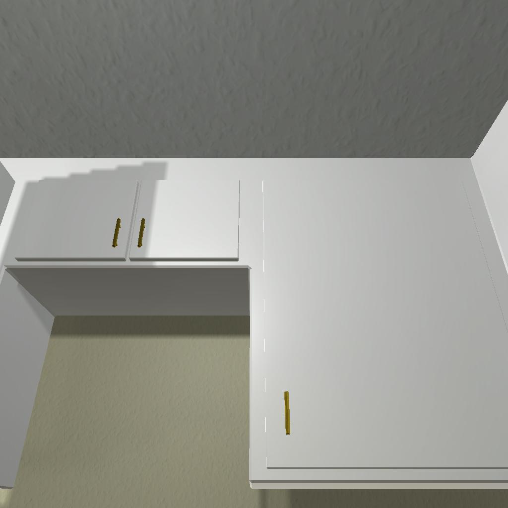

---------------------------------------------------------task: 18---------------------------------------------------------
--------------------------------------------------------------------------------------------------------------------------------------------------------------------
--------------------------------------------------------------------------------------------------------------------------------------------------------------------
Step:--------------------------------------------------------------------------8-------------------------------------------------------------------------------
----------------------------------------
VLM Prompt:
**Task**
Please perform as an embodied AI agent. Our final objective is to put a cool pot in cabinet. Below is the plan for completing the task, the current observation, alongside historical data and admissible actions for the next step. Please determine the best action for the next step!
**Plan**
Below is a detailed step-by-step plan to complete the task.
1. Find a pot.
2. Pick up the pot.
3. Find a fridge.
4. Cool the pot with the fridge.
5. Find a cabinet.
6. Place the cooled pot in the cabinet.
**Current Observation**
Displayed is an image capturing the current position of the agent.
Objects in The Image:
**History Information**
Displayed are the previous observations with their corresponding actions.
State 0:
No history.
State 1:
1. Step Index in the Plan: 1
2. Objects: Kitchen Sink, Cabinet, Drawer Handle
3. Action: go to cabinet 1
State 2:
1. Step Index in the Plan: Unknown (pot finding step)
2. Objects: Cabinet, Handles
3. Action: open cabinet 1
State 3:
1. Step Index in the Plan: Unknown
2. Objects: Cabinet, Cabinet Doors, Handles
3. Action: go to fridge 1
State 4:
1. Step Index in the Plan: 4
2. Objects: Refrigerator, Cabinet
3. Action: open fridge 1
State 5:
1. Step Index in the Plan: 4
2. Objects: Refrigerator, Countertop, Red Drawer Unit
3. Action: close fridge 1
State 6:
1. Step Index in the Plan: 5
2. Objects: Refrigerator, Cabinet, Countertop
3. Action: go to cabinet 1
State 7:
5. Step Index in the Plan: 5
6. Objects: Cabinet, Cabinet Door
7. Action: go to countertop 1
State 8:
1. Step Index in the Plan: 6
2. Objects: Countertop, Cabinet, Drawer Handles
3. Action: go to cabinet 2
**Admissible Actions**
(1): go to cabinet 3
(2): go to cabinet 4
(3): go to cabinet 5
(4): go to cabinet 6
(5): go to coffeemachine 1
(6): go to cabinet 7
(7): go to toaster 1
(8): go to cabinet 8
(9): go to sink 1
(10): go to fridge 1
(11): go to microwave 1
(12): go to garbagecan 1
(13): go to cabinet 9
(14): go to cabinet 10
(15): go to countertop 2
(16): go to cabinet 11
(17): go to cabinet 12
(18): go to drawer 1
(19): go to countertop 3
(20): go to drawer 2
(21): go to cabinet 13
(22): go to sinkbasin 1
(23): go to cabinet 14
(24): go to drawer 3
(25): go to stoveburner 1
(26): go to stoveburner 2
(27): go to stoveburner 3
(28): go to cabinet 15
(29): go to stoveburner 4
(30): go to cabinet 16
(31): go to cabinet 17
(32): go to cabinet 18
(33): go to cabinet 19
(34): go to cabinet 20
(35): go to shelf 1
(36): go to shelf 2
(37): go to shelf 3
(38): open cabinet 2
(39): close cabinet 2
**Analysis Guideline**
1. Analyze the history and current observation, and then determine our current step in the plan and our current place.
2. List all visible objects related to the task in the current observation, without summarizing any as "various items."
3. Analyze the objects in the current observation based on the history and the requirements for the current step, and then determine if we can complete the step with the current observation.
4. Analyze and decide on the most appropriate action to take.
5. Summarize the analysis using the following format: "Analysis: [The summarization of the analysis], The Most Appropriate Action: (i which is the integer.): [Selected action]"
**Notes**
1. We must complete each step of the plan in order and cannot skip steps when the previous ones are not finished.
2. For "Go to" actions listed as "go to xxx [n]", interpret this as there are n distinct actions available: "go to xxx 1", "go to xxx 2", ..., "go to xxx n". Select one specific action from these options instead of using "go to xxx [n]".
3. If receptacles such as drawers, cabinets, and so forth are closed in the current observation, we may try to open them.
4. Pay attention to synonyms and ensure clarity in the terms used.
5. We must determine and provide the single action which must be in the **Admissible Actions**.
6. If there is no history available, we are at the first step and the current place is "Unknown".
**Answer**
Please select the most suitable action by following the **Analysis Guideline**, keeping the above **Notes** in mind.
----------------------------------------
----------------------------------------
VLM Response:
Analysis: The current step in the plan is to place the cooled pot in the cabinet, which is step 6. The current observation shows an overhead view of two closed cabinets. Based on the history information, the agent has already cooled the pot and is in the process of finding a cabinet to place the pot in. In the current observation, there are no other objects visible besides the two closed cabinets. Since the task requires placing the cooled pot in a cabinet, and the cabinets in the observation are closed, the agent needs to open one of these cabinets to proceed with the task. The most appropriate action from the admissible actions list that corresponds to the current observation and the current step of the plan is to open one of the cabinets shown.
The Most Appropriate Action: (38): open cabinet 2
----------------------------------------
----------------------------------------
>>> Refine VLM Response and Get Pure Action: open cabinet 2
----------------------------------------
-----------------------------------------------------------------
Running time: 9.195503234863281 seconds
Total Money: 0
-----------------------------------------------------------------
-----------------------------------------------------------------
Summarization Prompt:
**Context**
Analysis: Since there is no history information, we are at the first step in the plan, which is to find a statue. The current place is unknown. In the current observation, we see a floorlamp next to an armchair with a small table that has a small object on it, which could potentially be the statue we are looking for. Since the plan requires us to find a statue first and it appears there might be one on the table next to the armchair, we should investigate this object to determine if it is the statue we need.
The Most Appropriate Action: (1): go to armchair 1
**Summary**
1. Step Index in the Plan: 1
2. Objects: Floorlamp, Armchair, Small Table, Small Object (potential statue)
3. Action: go to armchair 1
**Context**
Analysis: The current step in the plan is to place the cooled pot in the cabinet, which is step 6. The current observation shows an overhead view of two closed cabinets. Based on the history information, the agent has already cooled the pot and is in the process of finding a cabinet to place the pot in. In the current observation, there are no other objects visible besides the two closed cabinets. Since the task requires placing the cooled pot in a cabinet, and the cabinets in the observation are closed, the agent needs to open one of these cabinets to proceed with the task. The most appropriate action from the admissible actions list that corresponds to the current observation and the current step of the plan is to open one of the cabinets shown.
The Most Appropriate Action: (38): open cabinet 2
Please summarize the context by following above examples when providing the summary, and ensure that only the summary is included, without any extra explanation.
**Summary**
-----------------------------------------------------------------
-----------------------------------------------------------------
Summarization Response:
1. Step Index in the Plan: 6
2. Objects: Closed Cabinets (two)
3. Action: open cabinet 2
-----------------------------------------------------------------
-----------------------------------------------------------------
Text Observation:You open the cabinet 2. The cabinet 2 is open. In it, you see nothing.
-----------------------------------------------------------------
UNSUCCEED